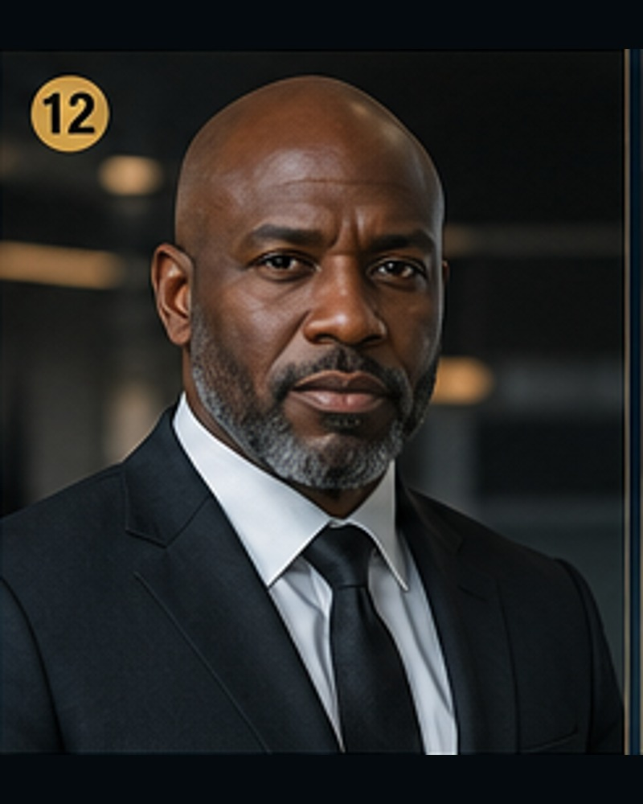

01
Executive Command Cabinet
Gray London Skyes
Founder, Principal Executive Architect & Chairman of Executive Command
Vision, ownership direction, strategic doctrine, ecosystem architecture, executive authority
Open resume MetrAIyux 0S
MetrAIyux 0SProtected autonomous operating structure for staffing, operations, technology, and enterprise service execution
A protected autonomous company operating system with owner-admin command, customer SaaS workspaces, 16 operating brains, 0meg4kAI security review, Resend approval emails, Cloudflare Worker kits, tenant isolation, and cabinet-level execution discipline.
Live surface command strip
When somebody lands here, I want the next move to be obvious: inspect the public overview, open the brain wall, route a buyer through proof, or look at the FS27 gate that protects the command deck. The system should feel operated from the first screen, not buried under setup notes.
The sendable overview for prospects who need the value before the protected rooms.
Portraits, resumes, screenshots, and operating rooms for the 16-brain model.
Celeste routes a buyer's pain to the right live surface instead of a generic pitch.
The public proof surface for auth, event mirrors, key control, and command-deck trust.
All prior working names are retired to release-history language. The live product is MetrAIyux 0S: a protected autonomous business command layer with an owner-controlled Main Automation Brain, customer-facing SaaS workspaces, 0meg4kAI security/QA review, approval gates, and Cloudflare-ready persistence.
Product identity, tagline, naming rules, and public positioning.
Keep customers away from owner credentials, production connectors, and the Main Automation Brain.
Security, QA, tenant review, and system audit brain.
Full proof receipt for this naming conversion.
QUANTUM OPS upgrade
This layer gives the operator business inbox triage, autonomous work queues, a brain council room, decision routing, human approval gates, Cloudflare-ready state planning, revenue/staffing/client-success/proof autopilots, and a stronger Site Operator Worker kit.
ADMIN AUTOMATION UPGRADE
Logged-in admins can command the main brain, route tasks to all cabinet/person brains, queue social drafts, require QA/proof review, approve publishing, and connect the whole layer to a Cloudflare Worker for persistent automation.
SAAS SELF-SERVE UPGRADE
This layer gives the operator a customer portal and tenant provisioning architecture: pricing, signup, onboarding, company profile, service selector, workspace setup, billing intent, customer dashboard, and Cloudflare Worker/D1 provisioning kit.
Operating model
Each cabinet owns a distinct business function. The Chief Executive Officer / Chief of Operations coordinates the cabinets to ensure that sales, staffing, finance, client success, compliance, technology, marketing, vendor relations, quality assurance, and expansion move as one controlled system.
Executive direction, ownership alignment, board-facing reporting, and strategic doctrine.
Account executives, sales materials, proposals, client acquisition, and close support.
Staffing, client success, operations, workforce coordination, and service quality.
Technology, finance, compliance, partnerships, reporting, and scalable systems.
Government readiness, enterprise contracting, innovation, AI workflows, and future markets.
Leadership roster
Executive Command Cabinet
Founder, Principal Executive Architect & Chairman of Executive Command
Vision, ownership direction, strategic doctrine, ecosystem architecture, executive authority
Open resume
Operations Cabinet
Chief Executive Officer / Chief of Operations
Daily command, cabinet coordination, execution discipline, internal operations
Open resume
Sales & AE Cabinet
Chief Revenue Officer / Director of Account Executive Strategy
AE management, revenue pipeline, close support, proposal strategy
Open resumeClient Success Cabinet
Chief Client Officer / Director of Client Success
Retention, onboarding, escalation, client relationship management
Open resume
Finance & Accounting Cabinet
Chief Financial Administrator / Director of Finance Operations
Budgets, billing, forecasting, payroll coordination, financial reporting
Open resume
Legal & Compliance Cabinet
Compliance Operations Director / Corporate Risk Coordinator
Contracts, risk routing, compliance workflows, document control
Open resume
HR & Staffing Cabinet
Chief Staffing Officer / Director of Workforce Operations
Recruiting, onboarding, workforce planning, candidate management
Open resume
Technology & Systems Cabinet
Chief Technology Systems Officer / Director of Platform Operations
Websites, dashboards, AI tools, internal systems, automation
Open resume
Marketing & Brand Cabinet
Chief Brand Officer / Director of Marketing Strategy
Public messaging, campaigns, SEO, sales collateral, brand authority
Open resumeGovernment & Enterprise Contracting Cabinet
Director of Government & Enterprise Readiness
Procurement readiness, registrations, capability statements, enterprise sales support
Open resume
Partnerships & Vendor Relations Cabinet
Strategic Partnerships Director / Vendor Relations Officer
Vendor management, referral partners, subcontractors, strategic alliances
Open resume
Quality Assurance & Performance Cabinet
Director of Quality Assurance & Performance Control
Audits, KPIs, proof systems, service quality, performance correction
Open resumeExpansion & Innovation Cabinet
Chief Innovation Officer / Director of Expansion Strategy
New markets, new services, automation, AI strategy, growth experiments
Open resumeLightweight local brain
The Local Cabinet Brain searches the included resumes, cabinet data, governance charter, and company doctrine directly in the browser. It does not need a GPU or paid AI provider. Optional Ollama or llama.cpp wiring is included for later local model use.
This gives AEs and operators a fast way to ask: who owns this function, how do we explain this cabinet to a client, what does the charter say, and what filing cautions apply?
Longform authority
The blog library explains the 13-Cabinet model in serious public-facing language for prospects, account executives, operators, and internal training. Each post is also added to the local command brain knowledge base.
AE presentation layer
Account executives can reference the cabinet model during discovery calls, proposals, capability statements, and enterprise conversations. The point is to show prospects that the company has defined ownership for sales, staffing, client success, finance, compliance routing, technology, marketing, partnerships, QA, and expansion.
This positioning makes the sales motion stronger because the client sees an organized operating system instead of disconnected reps.
Governance profile
| # | Name | Title | Cabinet | Function |
|---|---|---|---|---|
| 1 | Gray London Skyes | Founder & Principal Executive Architect | Executive Command Cabinet | Vision, ownership direction, strategic doctrine, ecosystem architecture, executive authority |
| 2 | Marcus Vale | CEO / Chief of Operations | Operations Cabinet | Daily command, cabinet coordination, execution discipline, internal operations |
| 3 | Celeste Monroe | Chief Revenue Officer | Sales & AE Cabinet | AE management, revenue pipeline, close support, proposal strategy |
| 4 | Adrian Cross | Chief Client Officer | Client Success Cabinet | Retention, onboarding, escalation, client relationship management |
| 5 | Naomi Sterling | Chief Financial Administrator | Finance & Accounting Cabinet | Budgets, billing, forecasting, payroll coordination, financial reporting |
| 6 | Julian Mercer | Compliance Operations Director | Legal & Compliance Cabinet | Contracts, risk routing, compliance workflows, document control |
| 7 | Sienna Brooks | Chief Staffing Officer | HR & Staffing Cabinet | Recruiting, onboarding, workforce planning, candidate management |
| 8 | Orion Hayes | Chief Technology Systems Officer | Technology & Systems Cabinet | Websites, dashboards, AI tools, internal systems, automation |
| 9 | Valentina Reyes | Chief Brand Officer | Marketing & Brand Cabinet | Public messaging, campaigns, SEO, sales collateral, brand authority |
| 10 | Donovan Pierce | Director of Gov/Enterprise Readiness | Government & Enterprise Contracting Cabinet | Procurement readiness, registrations, capability statements, enterprise sales support |
| 11 | Helena Ward | Strategic Partnerships Director | Partnerships & Vendor Relations Cabinet | Vendor management, referral partners, subcontractors, strategic alliances |
| 12 | Victor Saint | Director of QA & Performance Control | Quality Assurance & Performance Cabinet | Audits, KPIs, proof systems, service quality, performance correction |
| 13 | Amara Voss | Chief Innovation Officer | Expansion & Innovation Cabinet | New markets, new services, automation, AI strategy, growth experiments |
Planning-use boundary: do not file fictional officers or employees as real legal appointments. Actual incorporation records must use verified people, real appointments, accurate addresses where required, and reviewed authority language.
Deployment Command Center
This package deploys as a static website. Upload the folder contents to Netlify, Cloudflare Pages, Vercel, or any static host. Entry file: index.html.
index.html, style.css, script.js, assets/, resumes/, docs/, and data/ are present.Next upgrade pack
This version brings industry landing pages, candidate intake, revenue calculators, AE command tools, founder-office narrative, sample proof frameworks, and FAQ support so the site works harder as a public pitch engine and internal operator kit.
Dedicated buyer routes for staffing, government, enterprise, technology-enabled services, commercial growth, and founder-led operating systems.
Browser-local candidate profile builder with JSON export for staffing workflows.
Staffing margin, AE commission, pipeline forecast, and contract readiness scoring.
Pitch language, daily rhythm, and call-note next-action builder.
Gray London Skyes founder narrative and executive doctrine page.
Presentation-safe sample proof narratives that avoid fake client claims.
Continued upgrade pack
This version turns the site into a stronger sales and operations asset: more buyer routes, cleaner launch controls, partner/investor-style narrative pages, and staffing workflow tools that support actual AE and recruiting activity.
Discovery call, capability packet, partnership intake, buyer checklist, engagement models, and trust center.
Prelaunch checklist, QA matrix, content control sheet, and client-facing copy rules.
Executive summary, operating model, growth thesis, and transparent risk register.
Job order intake, candidate scorecard, placement workflow, and client onboarding packet.
Super upgrade pack
This version strengthens the website as a serious company operating surface: board-ready governance documents, package offers, Arizona service-area pages, launch receipts, claims review, and internal operator runbooks.
Resolution language, authority matrix, appointment workflow, minutes, and delegation ledger.
Starter, Growth, and Enterprise package pages with a browser-local package fit calculator.
Arizona city/service pages for staffing, operations, government readiness, and technology-enabled services.
Build receipt, QA receipt, and claims-review receipt for proof-driven deployment.
Deployment runbook, provider map, content freeze checklist, and brain test script.
Discovery, objection handling, outbound sequences, demo room, close control, and AE proof packet.
Status board, onboarding wizard, escalation desk, renewal review, and document request center.
One static dashboard per executive cabinet with weekly operating rhythm and proof requirements.
Data-room index, growth plan, and expanded risk register for serious review.
This layer makes the site stronger as a full operating surface: internal command tools, stakeholder review rooms, public trust pages, lightweight automation maps, AI/LLM-ready context files, competitive positioning, and packet/download checklists.
Meeting room, risk register, vendor scorecard, appointment docket, and approval queue.
Stakeholder brief, decision log, contribution tracker, and founder approval sheet.
Privacy, terms, accessibility, data handling, and no-legal-advice boundaries.
Intake routing, follow-up planning, proof collection, and brain escalation rules.
AI context, brain test console, prompt library, freshness ledger, and llms.txt.
Comparison pages for enterprise buyers and staffing/operations prospects.
Capability packet, launch proof, client handoff, and executive roster packet checklists.
This layer upgrades the site from a large brochure into a stronger business operating surface: sell, qualify, brief, prove, export, and route work through the 13-cabinet model.
New central layer for conversion, executive status, buyer intelligence, and proof export.
One expanded operating room for every cabinet executive.
Persona-specific close paths, objections, and proof requirements.
Proposal builder, scope modules, timeline, pricing narrative, and handoff language.
Release receipts, claims sheets, brain tests, link audit, and content freeze tools.
Pipeline board, territory planner, referral tracker, AE ledger, and renewal tracker.
Expanded longform pages for buyer types, cities, and service lanes.
Dominion Upgrade
The site carries a deeper operating layer for proving readiness before selling, filing, launching, staffing, or expanding.
Open Dominion Upgrade HubThis layer makes the site stronger for serious selling and operating: account plans, CRM import structure, email sequences, retention expansion, proof automation, branch/acquisition thinking, and portal workflows with browser-local export.
Central command page for this upgrade layer.
Named account strategy and buyer committee mapping.
From discovery to onboarding, QA, renewal, and expansion.
Executive intake, client launch, vendor risk, candidate placement, and board action rooms.
Practical sequence for launching and controlling the company system.
The site now includes a lightweight autonomous business layer. It routes leads, client requests, candidate events, partner/vendor messages, compliance issues, proof needs, and operator tasks to the correct cabinet brain while creating local event and task receipts. A Cloudflare Worker kit is included for edge API routing, KV storage, Queues, and future Workers AI expansion.
Run the 16-brain router and route work across all cabinets.
Buyer-safe edge architecture, Worker status, and public security boundary.
Daily operating rhythm, escalation rules, and Cloudflare phase path.
Documents what was added and what is not overclaimed.
The site now includes a stronger autonomous business OS layer that routes incoming signals across the 16 operating brains, creates receipts, enforces human approval gates, and includes Cloudflare Worker/D1/KV/Queue deployment assets.
NEXUS extends the autonomous business layer with CRM-style records, business inbox triage, brain-to-brain routing, local ledgers, human approval gates, Cloudflare Worker persistence, D1 schemas, and proof receipts. The system routes and records; humans still approve money, contracts, legal posture, personnel decisions, and public claims.
Operate the 16-brain system from one command surface.
Classify and route business signals to the correct brain pair.
Define primary brains, secondary review, and human approvals.
Optional D1/KV/Queue-backed persistence path.
Honest release receipt and provider-gate boundaries.
CROWN upgrades the autonomous business system with operating rooms for brain council review, business inbox classification, task lifecycle ledgers, human approval gates, revenue pulse, client health, candidate placement, compliance watch, proof command, site content control, Cloudflare D1/KV/Queue persistence, and launch-proof exports.
Open the full CROWN autonomous operating layer.
Route signals through the Site Operator Brain and cabinet brains.
Keep money, contracts, hiring, regulated advice, and public claims under human control.
D1/KV/Queue-ready API kit for shared persistence.
Release receipt and honest boundaries.
This layer organizes the current working names, proposes public product names, updates valuation bands, and extends the admin tutorial through SaaS provisioning and 0meg4kAI security/QA control.